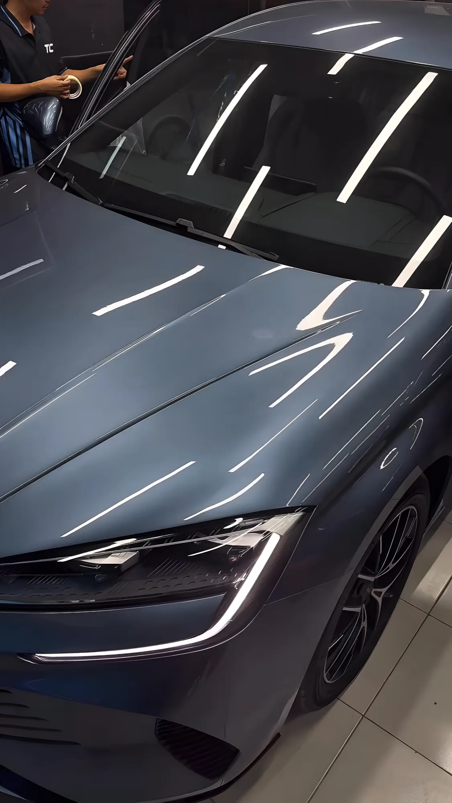
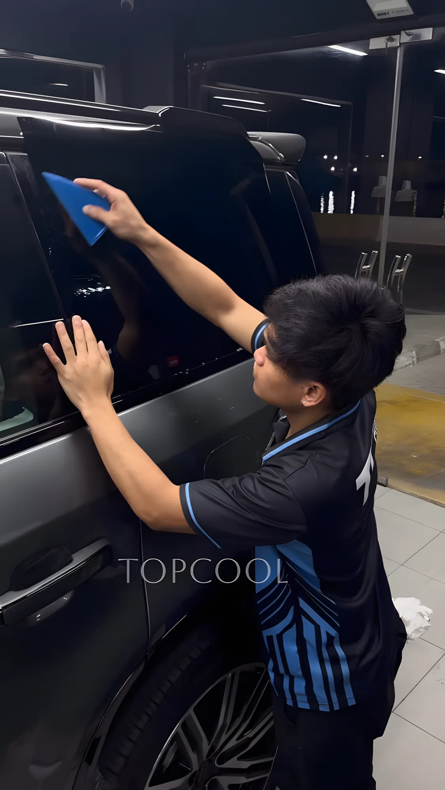
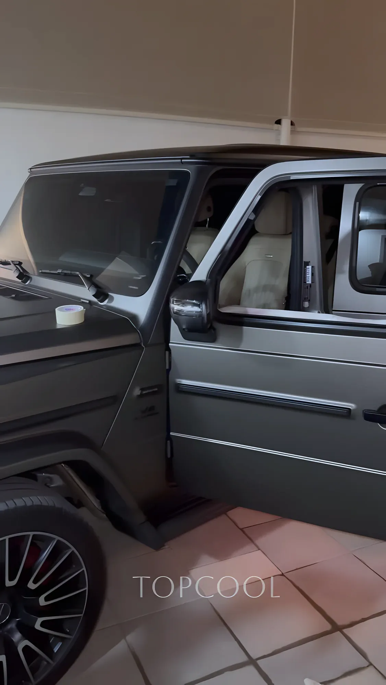
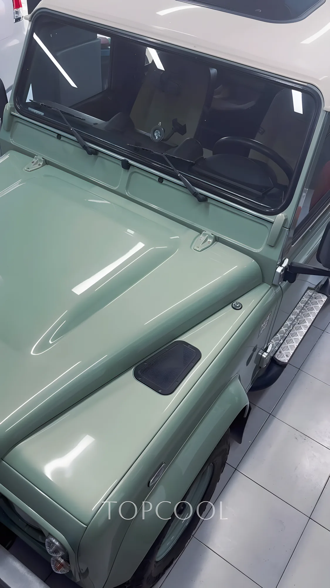
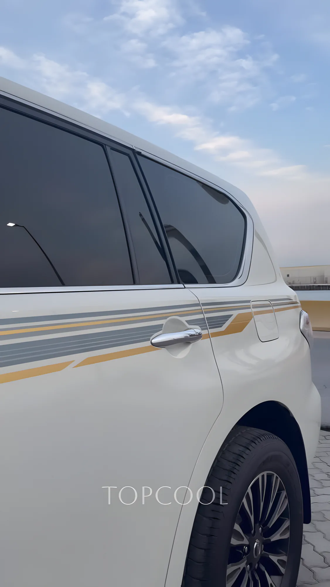
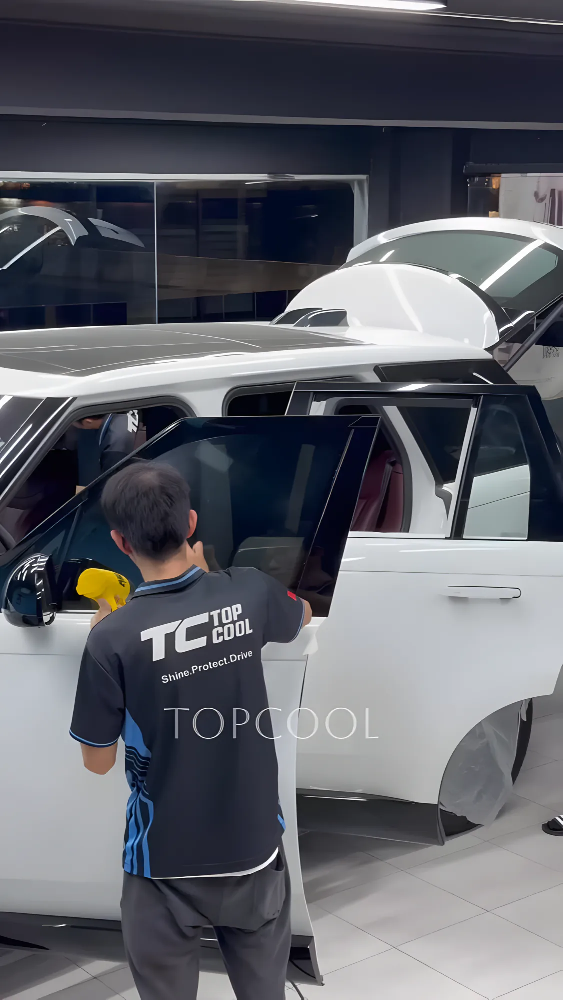
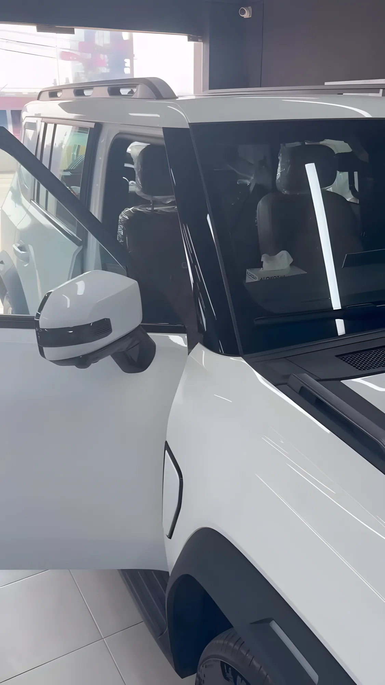
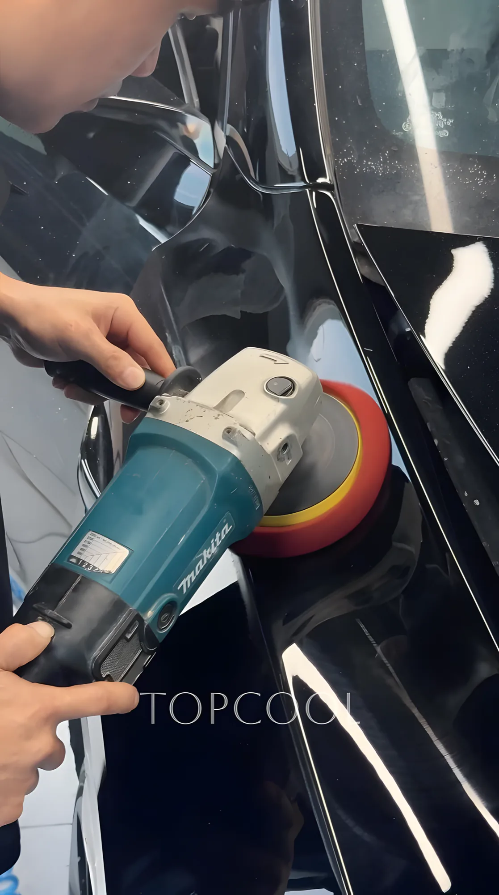
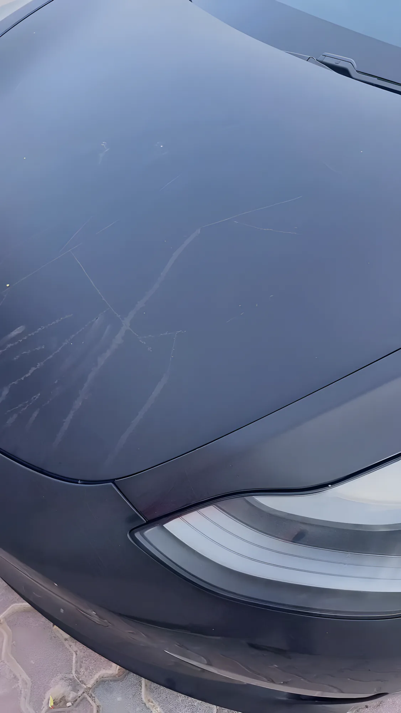
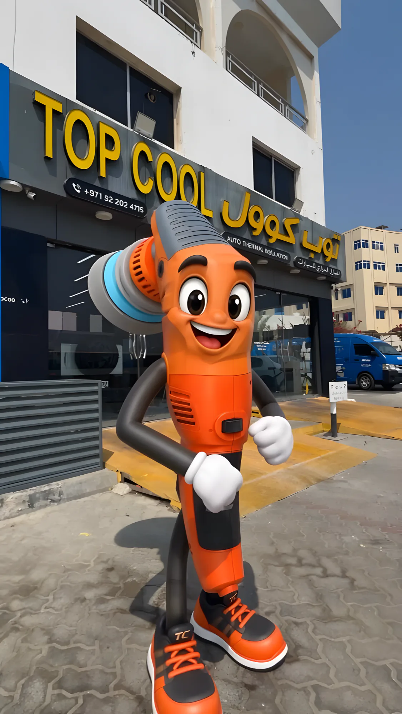

Window tinting
Ceramic and thermal film that cuts the heat and the UV and gives you privacy. Our sign says Auto Thermal Insulation, and that's still most of what we do, from a BYD to a G-Class.
Ask for a tint price
Window tinting for cars, homes and offices in Ras Al Khaimah, since 2011. Ceramic coating, polishing, side graphics and dent repair under the same roof in the Old Market.

Lately in the shop
We started as Ras Al Khaimah's first shop that did nothing but window tinting. Today the same crew also does coating, polishing and graphics, so the whole car can be done in one visit.
Automotive · Commercial · Residential
Ceramic and thermal film that cuts the heat and the UV and gives you privacy. Our sign says Auto Thermal Insulation, and that's still most of what we do, from a BYD to a G-Class.
Ask for a tint price
Can't spare the car for the day? We'll tint it in your own garage. Homes, villas and offices get tinted too.
Book a home visit
Hand polishing and paint correction first, then 10H ceramic or ceramic graphene coating, outside and in.
Ask about coating
Custom side graphics cut for your car, and paintless dent repair that pulls the dent out and keeps the factory paint.
See the details

Shine.Protect.Drive.
Three words printed on our crew's shirts. Polish the paint, protect it and the glass, then hand the car back ready for a Ras Al Khaimah summer.
Top Cool · Old Ras Al Khaimah

Jetour T2heat-rejection tint
Machine polishingpaint correction Mercedes G-Classtinted at the owner's home
Black paintswirls before correction
Look for the yellow letters
The Old Market, Ras Al Khaimah